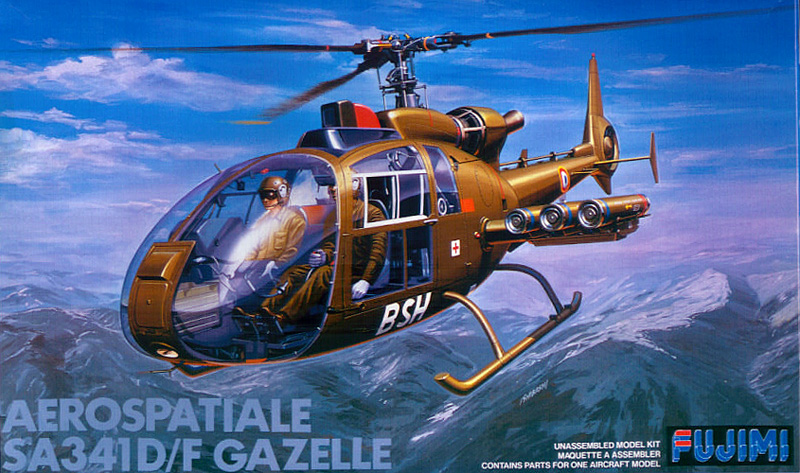
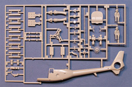
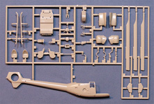
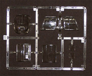
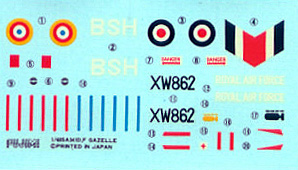

{kind=link}
{kind=link}
{kind=link}


Fujimi 1/48 Aérospatiale Gazelle Sa-341D/F

Kit #1603 Collector's market Value $38.00
Images and text Copyright © 2010 by Matt Swan
Developmental Background
French aircraft manufacture Aérospatiale has roots that can be traced back to a collection of small privately owned companies operating prior to and during the Second World War. These companies were nationalized after the war into Sud-Est and Sud-Quest. Sud-Est built various passenger and fighter aircraft as well as the Alouette series of helicopters. Sud-Quest also built several aircraft but very early in the game morphed into a company that mainly manufactured buses. In 1958 the two companies were merged into Sud-Aviation which was merged once again in 1970 with Nord Aviation to become Aérospatiale. The mergers did not stop there; in 2000 Aérospatiale became part of European Aerospace Company (EADS).
In 1966 Sud-Aviation was developing the Sa-341 and had an operational prototype by February of 1967. This aircraft quickly caught the attention of the British Military Services. An arrangement was worked out where Westland was allowed to build about 300 Sa-341 Gazelles and about 50 Pumas for various British military arms and Sud-Aviation would build Westland Lynx helicopters for the French Navy. After the 1970 merger with Nord they became known as Aérospatiale Gazelles but still carried the Sa-341 designation.
The helicopter itself was designed to fulfill a French requirement for a light utility that would be used not only for reconnaissance but in an attack role as well. The Sa-341 incorporated several unique (for the time) features such as composite rotor blades and a fenestron or fantail which contributed greatly to noise reduction. The Sa-341 could carry a 20mm cannon, Mistral air-to-air missiles and the Viviane thermal imaging system. Later models in use by the British military utilize the QinetiQ Direct Voice Input system which allowed crews to verbally command the helicopter. The Gazelle served with several air forces besides the French and British. Units were sold to Iraq, Syria, Lebanon, Ireland and Yugoslavia just to name a few. Overall more than thirty different air forces either operated or still operate the Sa-341. It is also active within the civilian market and is not an uncommon find on the silver screen having made many movie appearances in an on-screen role or as a camera platform.
The Kit
Fujimi does not do that much in aircraft modeling anymore, especially in 1/48. Seems most of their current focus is more in automotive modeling however once upon a time they produced a very nice although small line of top end aircraft kits. This helicopter model came near the end of that era (1988) and benefits from most of the advances that Fujimi made during that production period. The kit is packaged in a conventional tray type box and consists of two large trees of light gray, high pressure injection molded parts and a single small sprue of clear parts.
The immediate impression upon opening the box is twofold; first that this is a well molded kit and second that it is small and delicate appearing. The fuselage sides display a very smooth surface texture with finely engraved panel lines. There is some subdued raised rivet detail and the fin shows a good soft material texture. The exposed areas of the engine and rotor head have adequate detail however when you get to the interior of the model things start to get chunky. This is probably the most disturbing aspect of the model, when the exterior dimensions are checked this kit is very close to 1/48 scale being short by only 2.88 scale inches however the crew figures, seats and equipment are closer to 1/52 scale. The instrument panels have raised instrument faces with no fine detail, the seats are heavy and thick with no harness detail, and the crew figures are a total waste of time with huge helmet heads that look more appropriate for Mel Brooks’ imperial troopers in Space Balls and bodies with poor definition and unrealistic posture. Interior parts suffer from large, heavy mold separation seams and some of the larger exterior parts like the missile rails have some sink marks. Other than that the parts themselves seems to be free of flash and generally of good quality.
The single sprue of clear parts include optional upper canopy panels from the D and F models along with separate cockpit doors. These parts all have well defined raised frames and raised rivet detail. They also display good clarity and will most likely look great after a dip in some Future. Overall in the kit we have seven clear parts and eighty five light gray parts for a total of ninety two parts in the box.



You may click on these small images to view larger pictures
Decals and Instructions
The kit instructions consist of a single long fold-out sheet which basically forms eight panels when open. The first panel contains a basic aircraft history in five languages. From here we get a reasonably good paint chart with what appear to be Gunze paint code numbers and colors listed by name as well as a parts map.

There are thirteen exploded view assembly steps with various color call-outs. There are two panels devoted to exterior painting and decal placement.
The small sheet of decals provided contain al the basic markings for two aircraft. One is a French Army F model and the other is an RAF D model. The decal sheet in my example is not handling the years well, the edges are curling and I am very suspicious that the decals may be cracked and will most likely give me silvering issues when application time arrives. With luck I’ll remember to dip them in Future just before they go on the kit. The color density and print registry of the decals appear good. There are no instrument decals to help out that basic instrument panel that came with the kit.
Conclusions
On the outside this is a good looking kit with good scale dimensions and surface detail. Inside the cockpit the kit needs help being out of scale and poorly detailed. Instructions are adequate to get the job done and decals, while not aging well look good on the print side of things. While there is nothing on the aftermarket to remedy the interior issues of this kit there are a couple of decal packages out there that provide the modeler with some unusual painting options. Colorado Decals offers two sets that both include at least one marking option for a Gazelle and Aztec Decals has one set that offers two different Ecuadorian Air Force options. The scale issue in the cockpit will prove somewhat problematic should you want to crew this with respectable figures. First simply because you will have a difficult time cramming a 1/48 scale figure in there and second because the seats are dramatically undersized. Don’t get me wrong, this is not impossible to fix, just will require some work. Overall I am fairly happy with the kit, see it as a good addition to my 1/48 helicopter collection and give it at least a fair recommendation.